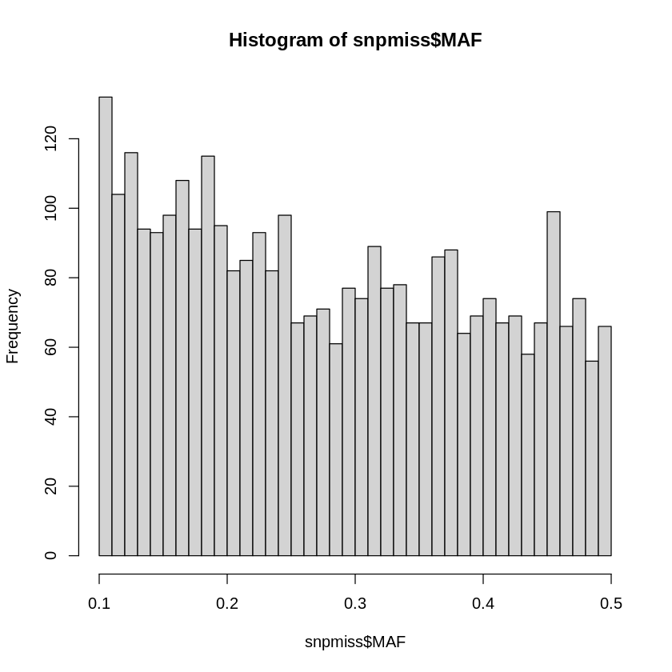
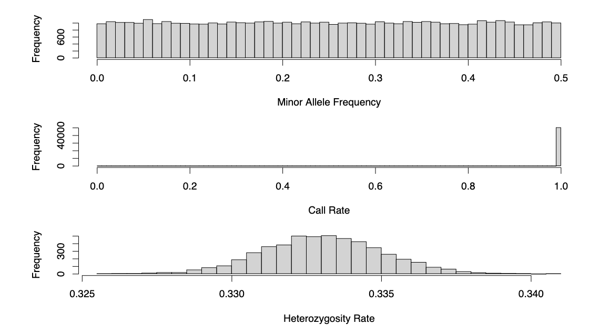
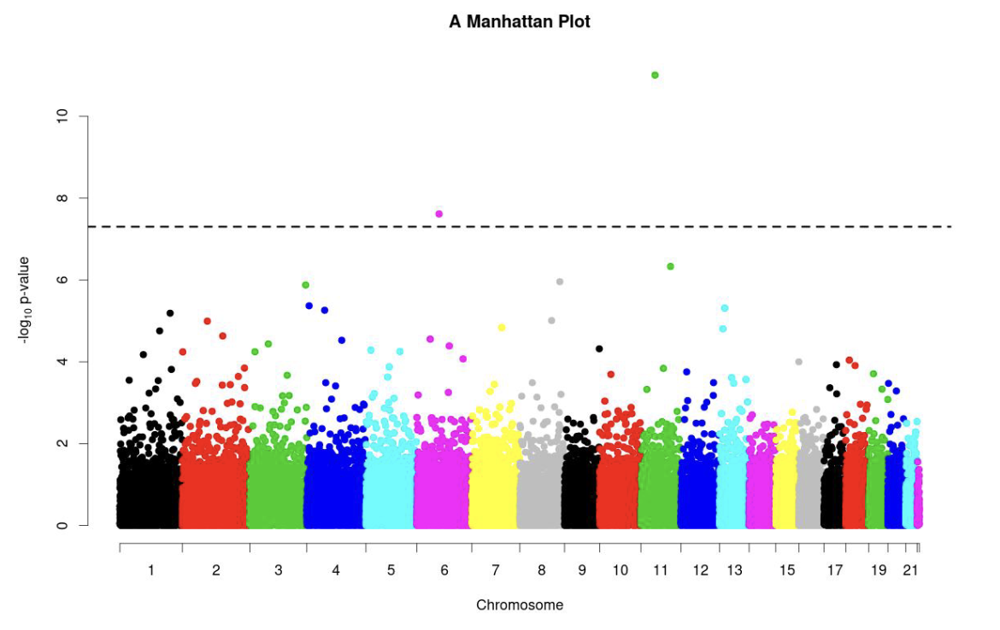

Explore LDAK software and some of its functionalities
Discuss other tools and conclusions from this tutorial
How to make this notebook work
In this notebook, we will only use the bash command line. Be sure to click on the menu Kernel --> Change Kernel --> Bash
Choose the Bash kernel
LDAK
Throughout this tutorial, we have used PLINK as the main method of our GWAS analysis. This is, in large part, due to its popularity in modern literature and its ease of use. But it is by no means the only method of GWAS.
One tool that has been developed in recent years is LDAK, by Dough Speed (2012). One of the most significant improvements of this program is the genetic prediction of complex traits from both individual-level data and summary statistics. Most prediction tools assume the GCTA model, whereby each SNP is expected to contribute equally to the phenotype (as is the case with PLINK). If we replace the GCTA Model with the BLD-LDAK Model, the squared correlation between observed and predicted phenotypes (\(R^2\)) increases by an average of 14% (s.d. 1%).
Overview of functionality
Using LDAK is very similar to PLINK. As with PLINK, you will require the .bed, .bim, and .fam files of your cohort. Beyond this, you will need additional files:
.info - information scores for SNPs
.pheno - a phenotype
.covar - covariates
.ind.hers - estimates of per-SNP heritabilities
.genefile - (real) RefSeq human gene annotations
If we call our prefix human, then very simply, we can compute summary statistics in the following way:
# link the data and create output directory ln-sf ../Datamkdir Results/GWAS8# Run ldak software../Software/ldak--calc-stats Results/GWAS8/human --bfile Data/ldak_data/human
mkdir: cannot create directory ‘Results/GWAS7’: File exists
-- -- -- -- -- -- -- -- -- -- -- -- -- -- -- -- -- -- -- -- -- -- -- -- -- -- -- -- --
LDAK - Software for obtaining Linkage Disequilibrium Adjusted Kinships and Loads More
Version 5.2 - Help pages at http://www.ldak.org
-- -- -- -- -- -- -- -- -- -- -- -- -- -- -- -- -- -- -- -- -- -- -- -- -- -- -- -- --
There are 2 pairs of arguments:
--calc-stats Results/GWAS7/human
--bfile Data/ldak_data/human
-- -- -- -- -- -- -- -- -- -- -- -- -- -- -- -- -- -- -- -- -- -- -- -- -- -- -- -- --
Calculating predictor and individual statistics
To run the parallel version of LDAK, use "--max-threads" (this will only reduce runtime for some commands)
-- -- -- -- -- -- -- -- -- -- -- -- -- -- -- -- -- -- -- -- -- -- -- -- -- -- -- -- --
Reading IDs for 424 samples from Data/ldak_data/human.fam
Reading details for 3289 predictors from Data/ldak_data/human.bim
Data contain 424 samples and 3289 predictors
Calculating statistics for Chunk 1 of 1
Statistics saved in Results/GWAS7/human.stats and Results/GWAS7/human.missing
-- -- -- -- -- -- -- -- -- -- -- -- -- -- -- -- -- -- --
Mission completed. All your basepair are belong to us :)
-- -- -- -- -- -- -- -- -- -- -- -- -- -- -- -- -- -- --
This command asks LDAK to read the data stored in Binary PLINK format with the prefix human, then save the results to files with the prefix “human”. Remember that software command line arguments, can be provided in any order (generally, there is no strict order requirement), so that the command above would be equivalent to ../Software/ldak --bfile Data/ldak_data/human --calc-stats Data/ldak_data/human
The output files are called human.stats and human.missing and found in the folder Results/GWAS8. By accessing the columns of human.stats, we can create plots similar to those in the notebook GWAS3 with the tutorial on QC:
######### FOR EXERCISEsnpmiss<- read.table(file="Results/GWAS8/human.stats", header=TRUE)head(snpmiss)hist(snpmiss$MAF, breaks = 50)# geom_histogram(binwidth = 0.001, col = "black", fill="tomato") + # labs(title = "Frequency of missingness rates in individuals") + # xlab("Frequency") + # ylab("Missingness in Individuals") + # theme_bw()###########################
A data.frame: 6 × 7
Predictor
A1
A2
A1_Mean
MAF
Call_Rate
Info
<chr>
<chr>
<chr>
<dbl>
<dbl>
<int>
<int>
1
21:14642464
A
G
0.884434
0.442217
1
-1
2
21:14649798
A
C
0.974057
0.487028
1
-1
3
21:14669931
G
A
0.969340
0.484670
1
-1
4
21:14688825
T
C
0.983491
0.491745
1
-1
5
21:14736298
C
T
0.858491
0.429245
1
-1
6
21:14757043
T
C
0.929245
0.464623
1
-1


Figure 7.1: Genomic properties are easily accessible by parsing through the outputted summary statistics
If you wish to perform single-SNP association analysis using linear regression. We would use the main argument --linear in this case. Each main argument requires different options. Remember to check the Documentation at www.dougspeed.com. Most software have a --help option, but LDAK doesn’t, so an alternative is to run the main argument, which will print out the options required and missing for a successful run:
../Software/ldak--linear linear
-- -- -- -- -- -- -- -- -- -- -- -- -- -- -- -- -- -- -- -- -- -- -- -- -- -- -- -- --
LDAK - Software for obtaining Linkage Disequilibrium Adjusted Kinships and Loads More
Version 5.2 - Help pages at http://www.ldak.org
-- -- -- -- -- -- -- -- -- -- -- -- -- -- -- -- -- -- -- -- -- -- -- -- -- -- -- -- --
There is one pair of arguments:
--linear linear
Error, you must use "--pheno" to provide phenotypes
: 1
The output can be used to obtain GWAS plots of interest, such as a Manhattan plot:

Figure 7.2: Manhattan plot outputted by LDAK
Furthermore, LDAK offers various additional methods and features, such as the explicit incorporation of covariates and PRS. For those interested, we recommend following the tutorials available here. Additionally, we have included the dataset accompanying this tutorial in the Data folder, conveniently named extra_data.zip. All you need is to run the commands in the tutorial.
The takeaway is that while more advanced tools exist, PLINK serves as an excellent starting point for conducting focused and specific analyses, particularly for educational purposes.
Further reading
There is only so much one can discuss in a beginner’s practical guide to GWAS. As such, for those who want to expand their knowledge of GWAS, we have provided a comprehensive list of resources for you to read/try out below.
Visually intuitive understanding of sequencing from Illumina
References
Loh, Po-Ru, George Tucker, Brendan K Bulik-Sullivan, Bjarni J Vilhjálmsson, Hilary K Finucane, Rany M Salem, Daniel I Chasman, et al. 2015. “Efficient Bayesian Mixed-Model Analysis Increases Association Power in Large Cohorts.”Nature Genetics 47 (3): 284–90.
Speed, Doug, Gibran Hemani, Michael R Johnson, and David J Balding. 2012. “Improved Heritability Estimation from Genome-Wide SNPs.”The American Journal of Human Genetics 91 (6): 1011–21.
 Choose the Bash kernel
Choose the Bash kernel